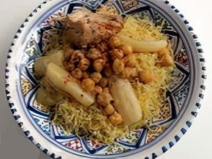
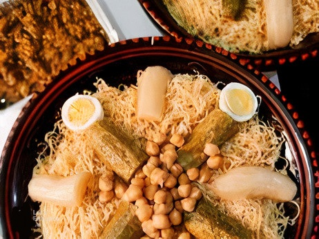

Rechta



Description
Rechta is a traditional Algerian dish that is also popular in other North African countries. It is a type of pasta dish made with thin noodles, typically served with a meat-based broth and a variety of vegetables. The dish is known for its flavorful and aromatic broth, which is often prepared with meat such as chicken or lamb, as well as a blend of spices like cumin, coriander, and cinnamon. Rechta is a dish that is commonly prepared for special occasions and family gatherings. It is appreciated not only for its rich and savory flavors but also for the communal aspect of sharing a large pot of this comforting and hearty meal.
Ingredients
- 200g of Rechta noodles
- 200g of meat (chicken, beef, or lamb)
- 2 tablespoons of oil
- 1 small onion, finely chopped
- 2 carrots cut to 8 pieces
- 1 zucchini cut to 4 pieces
- 1 turnip cut to 4 pieces
- 1 teaspoon of ground cumin
- 1 teaspoon of ground ginger
- 1 teaspoon of ground cinnamon
- Salt and pepper to taste
- 1/2 cup of chickpeas
Steps
- In a large pot, heat the oil over medium heat.
- Add the chopped onion, and sauté it.
- Add the meat and brown it on all sides.
- Add the spices, salt, and pepper and mix.
- Pour enough water to cover the meat, bring to boil, then reduce the heat and simmer until the meat is tender.
- Add the soaked chickpeas and continue simmering until partially cooked, then add the vegetables.
- Add your noodles and them simmer for about 10 minutes.